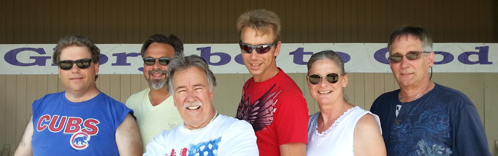

Zeal is a Christian music group playing together since 2003. The group brings decades of combined musical experience and a heart for playing music that celebrates a love of Jesus.

Zeal is available for worship services, fund raisers, festivals and any other occasion you can think of that needs music. What kind of music? Thoughtful songs. Exciting, upbeat songs. Prayers and scripture to create a mood that invites worship.
Be moved from reflective and prayerful to raucous and edgy!
Zeal’s mission is to provide a worship experience for believers in Jesus Christ and to give seekers a glimpse of the joy that can be theirs in fellowship with believers. Let Zeal help you create the mood and experience you seek for special services or to fill in if your worship team is unavailable.
Production ranges from unplugged to full sound reinforcement for outdoor venues. Please contact us today for more information.
Click here to see our song list.
We look forward to visiting with you and worshipping with you! Zeal is based in Crystal Lake, Illinois and plays in the general area of Chicago, McHenry County and suburbs in northern Illinois
We thank all of you that come out to worship God with us.
Contact us if you would like to come over and play with us as we prepare for yet another new season. We only plan to do what God places in front of us.
We will be playing in McHenry, Crystal Lake, Algonquin, Elgin and other Chicago area venues this year. Thank you and may God bless you and your families!
The long-time partnership between Zeal and Stade’s Farm and Market’s Sunday Worship services continues in 2015 with the announcement of 6 dates the band will play this year. It may be a little chilly now, but it will be warm and sunny before you know it and we look forward to getting back to the farm!
Stade’s Farm & Market
3506 W Miller Road
McHenry, IL
10:00am to 11:15am
• May 31
• June 14
• July 26
• Aug 30th
• Sept 27th
Several years ago we recoreded a few songs. Click a player to listen.
Amazing Grace (My Chains are Gone)
Awesome Is The Lord Most High
Be The Center
Beautiful One
Blessed Be Your Name
Born To Worship Jesus (Born to Be Wild)
Breathe
Come Home Running
Come Now Is The Time To Worship
Everlasting God
Father of Lights
Freedom Reigns
Forever
Friend of God
From the Inside out
Give Me Words to Speak
Give Us Clean Hands
God Of Wonders
God With Us
Healing is In Your Hands
Here I am to Worship
Here With Me
How Great Is Our God
Zeal is available for your live music needs. We work with non-profit groups and other organizations with special needs.
We travel in the Chicago area, McHenry County, Southern Wisconsin. Towns include Crystal Lake, McHenry, Algonquin, Elgin, Huntley, Cary, Schaumburg, and Chicago